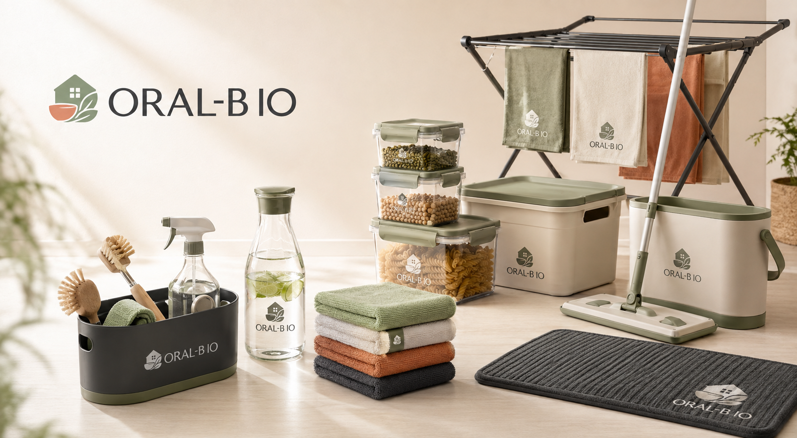

Contain
Clear containers and modular bins make ordinary supplies easier to see and return.

Independent Household Essentials Brand
ORAL-B IO makes simple household essentials for storage, cleaning, kitchen, laundry, and entryway routines. It is an independent home brand, unrelated to any oral-care company.
Product Line
Explore eight practical daily products with original AI-generated brand imagery and visible ORAL-B IO marks on the products.
Daily Routine
Clear containers and modular bins make ordinary supplies easier to see and return.
Soft towels, sponges, and surface tools support quick counter and entryway refreshes.
Mats, racks, and towels help handle daily moisture without visual clutter.
Consistent colors and clear product marks make the routine feel intentional.
Brand Note
This ORAL-B IO website presents an independent household daily necessities brand. The visual identity, product lineup, and product images are original for this site and do not use oral-care branding, dental products, or competitor assets.
Support
Contact the ORAL-B IO household essentials team for product questions, wholesale inquiries, or launch cooperation.